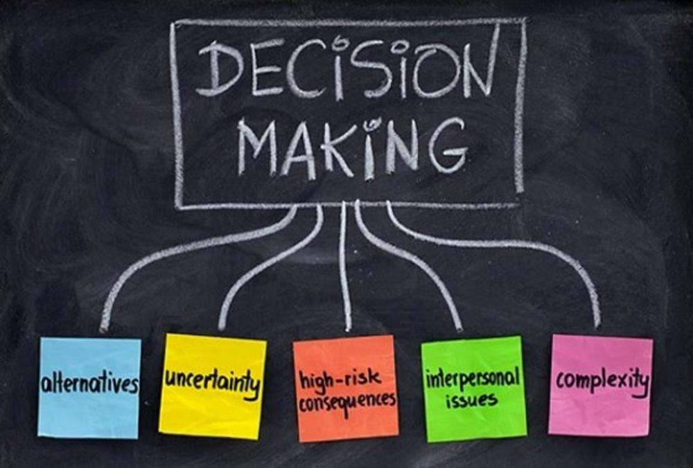

Decision, Decision !
Research explores when we can make a vital decision quickly and we need to proceed more deliberately
A
A widely recognised legend tells us that in Gordium (in what is now Turkey) in the fourth century BC an oxcart was roped to a pole with a complex knot. It was said that the first person to untie it would become the king of Asia. Unfortunately, the knot proved impossible to untie. The story continues that when confronted with this problem, rather than deliberating on how to untie the Gordian knot. Alexander, the famous ruler of the Greeks in the ancient world, simply took out his sword and cut it in two – then went on to conquer Asia. Ever since the notion of a ‘Gordian solution’ has referred to the attractiveness of a simple answer to an otherwise intractable problem.
B
Among researchers in the psychology of decision making, however, such solutions have traditionally held little appeal. In particular, the ‘conflict model’ of decision making proposed by psychologists Irving Janis and Leon Mann in their 1977 book, Decision Making, argued that a complex decision-making process is essential for guarding individuals and groups from the peril of ‘group-think’. Decisions made without thorough canvassing, surveying, weighing, examining and reexamining relevant information and options would be suboptimal and often disastrous. One foreign affair decision made by a well-known US political leader in the 1960s is typically held us as an example of the perils of inadequate thought, whereas his successful handling of a water crisis is cited as an example of the advantages of careful deliberation. However, examination of these historical events by Peter Suedfield, a psychologist at the University of British Columbia, and Roderick Kramer, a psychologist at the Stanford Graduate School of Business, found little difference in the two decision-making processes; both crises required and received complex consideration by the political administration, but later only the second one was deemed to be the effective.
C
In general, however, organizational and political science offers little evidence that complex decisions fare better than simpler ones. In fact, a growing body of work suggests that in many situations simply ‘snap’ decisions with being routinely superior to more complex ones – an idea that gained widespread public appeal with Malcolm Gladwell’s best-selling book Blink (2005).
D
An article by Ap Dijksterhuis of the University of Amsterdam and his colleagues, Making the Right Choice: the Deliberation-without-attention Effect’, runs very much in the spirit of Gladwell’s influential text. Its core argument is that to be effective, conscious (deliberative) decision making requires cognitive resources. Because increasingly complex decisions place increasing strain on those resources, the quality of our decisions declines as their complexity increases. In short, complex decisions overrun our cognitive powers. On the other hand, unconscious decision making (what the author refer to as ‘deliberation without attention’) requires no cognitive resources, so task complexity does not Effectiveness. The seemingly counterintuitive conclusion is that although conscious thought enhances simple decisions, the opposite holds true for more complex decisions.
E
Dijksterhuis reports four Simple but elegant studies supporting this argument. In one, participants assessed the quality of four hypothetical cars by considering either four attributes (a simple task) or 12 attributes (a complex task). Among participants who considered four attributes, those who were allowed to engage in undistracted deliberative thought did better at discriminating between the best and worst cars. Those who were distracted and thus unable to deliberate had to rely on their unconscious thinking and did less well. The opposite pattern emerged when people considered 12 criteria. In this case, conscious deliberation led to inferior discrimination and poor decisions.
F
In other studies, Dijksterhuis surveyed people shopping for clothes (‘simple’ products) and furniture (‘complex’ products). Compared with those who said they had deliberated long and hard, shoppers who bought with little conscious deliberation felt less happy with their simple clothing purchase but happier with the complex furniture purchases. Deliberation without attention actually produced better results as the decisions became more complex.
G
From there, however, the researchers take a big leap. They write: There is no reason to assume that the deliberation-without-attention effect does not generalize to other types of choices – political, managerial or otherwise. In such cases, it should benefit the individual to think consciously about simple matters and to delegate thinking about more complicated matters to the unconscious.
H
This radical inference contradicts standard political and managerial theory but doubtless comforts those in politics and management who always find the simple solution to the complex problem an attractive proposition. Indeed, one suspects many of our political leaders already embrace this wisdom.
I
Still, it is there, in the realms of society and its governance, that the more problematic implications of deliberation without attention begin to surface. Variables that can be neatly circumscribed in decisions about shopping lose clarity in a world of group dynamics, social interaction, history and politics. Two pertinent questions arise. First, what counts as a complex decision? And second, what counts as a good outcome?
J
As social psychologist Kurt Lewin (1890 – 1947) noted, a ‘good’ decision that nobody respects is actually bad, his classic studies of decision making showed that participating in deliberative processes makes people more likely to abide by the results. The issue here is that when political decision-makers make mistakes, it is their politics, or the relationship between their politics and our own, rather than psychology which is at fault.
K
Gladwell’s book and Dijksterhuis’s paper are invaluable in pointing out the limitations of the conventional wisdom that decision quality rises with decision-making complexity. But this work still tempts us to believe that decision making is simply a matter of psychology, rather than also a question of politics, ideology and group membership. Avoiding social considerations in a search for general appeal rather than toward it.
Questions 1-5
Choose the correct letter, A, B, C or D.
Write your answers in boxes 1-5 on your answer sheet.
1. The legend of the Gordian knot is used to illustrate the idea that
A anyone can solve a difficult problem
B difficult problems can have easy solutions
C the solution to any problem requires a lot of thought
D people who can solve complex problems make good leaders
2. The ‘conflict model’ of decision making proposed by Janis and Mann requires that
A opposing political parties be involved
B all-important facts be considered
C people be encouraged to have different ideas
D previous similar situations be thoroughly examined
3. According to recent thinking reinforced by Malcolm Gladwell, the best decisions
A involve consultation
B involve complex thought
C are made very quickly
D are the most attractive option
4.Dijksterhuis and his colleagues claim in their article that
A our cognitive resources improve as tasks become more complex
B conscious decision making is negatively affected by task complexity
C unconscious decision making is a popular approach
D deliberation without attention defines the way we make decisions
5. Dijksterhuis’s car study found that, in simple tasks, participants
A were involved in lengthy discussions
B found it impossible to make decisions quickly
C were unable to differentiate between the options
D could make a better choice when allowed to concentrate
Questions 6-9
Complete the summary using the list of words A-I below.
Write the correct letter, A-I, in boxes 6-9 on your answer sheet.
Dijksterhuis’s shopping study and its conclusions
Using clothing and furniture as examples of different types of purchases, Dijksterhuis questioned shoppers on their satisfaction with what they had bought. People who spent 6 time buying simple clothing items were more satisfied than those who had not. However, when buying furniture, shoppers made 7 purchasing decisions if they didn’t think too hard. From this, the researchers concluded that in other choices, perhaps more important than shopping. 8 decisions are best made by the unconscious. The writer comments that Dijksterhuis’s finding is apparently 9 but nonetheless true.
A more B counterintuitive C simple
D better E conscious F obvious
G complex H less I worse
Questions 10-14
Do the following statements agree with the views of the writer in Reading Passage?
In boxes 10-14 on your answer sheet, write
YES if the statement agrees with the views of the writer
NO if the statement contradicts the views of the writer
NOT GIVEN if it is impossible to say what the writer thinks about this
10 Dijksterhuis’s findings agree with existing political and management theories.
11 Some political leaders seem to use deliberation without attention when making complex decisions.
12 All political decisions are complex ones.
13 We judge political errors according to our own political beliefs.
14 Social considerations must be taken into account for any examination of decision making to prove useful.
---End of the Test---
Please Submit to view your score, solution and explanations.